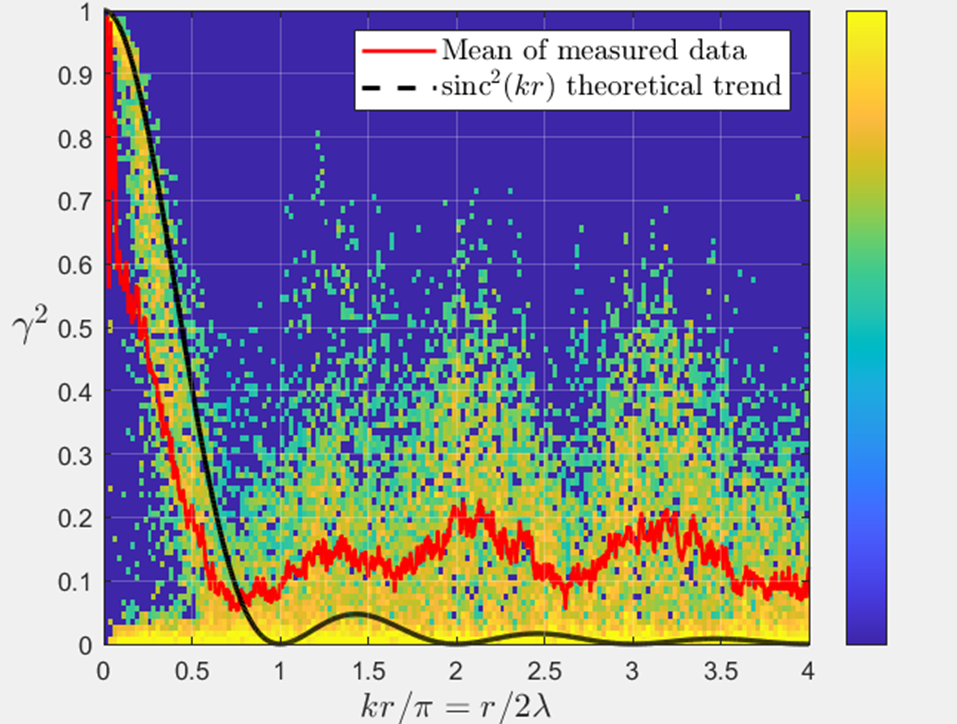

Microphone coherence testing for Direct Field Acoustic Noise testing, and Amplify, the software tool I built to run it.
Spacecraft have to survive the acoustic environment of their own launch, sound pressure levels loud enough to damage delicate hardware before it ever reaches orbit. Direct Field Acoustic Noise (DFAN) testing reproduces that environment on the ground using large arrays of loudspeakers, rather than the reverberant chambers traditionally used for spacecraft acoustic qualification.
Getting that simulated sound field right matters: if it isn't sufficiently diffuse and spatially uniform, the test doesn't faithfully represent what the spacecraft will actually experience at launch. That's the problem my work addressed.
As part of my work with RAL Space, I contributed to the development and evaluation of microphone coherence testing methods for DFAN, conducted in close collaboration with Professor Jonathan Hargreaves at the University of Salford, drawing on his acoustics expertise to refine our experimental methodology and data interpretation.
I helped configure microphone arrays and run tests measuring spatial coherence (γ²) between microphone pairs, the key metric for verifying whether the sound field a DFAN system generates is sufficiently diffuse and uniform, rather than concentrated or spatially correlated in ways that wouldn't match a real launch environment.
All of this, running the tests, computing coherence, and producing the plot below, was done through Amplify, the software tool I built to run this testing process.

The closer the measured mean tracks the theoretical curve, the more confidence you can have that the microphone spacing and array configuration are producing a genuinely diffuse field, which is exactly what a DFAN setup needs to faithfully replicate launch conditions.
One detail that matters here: every microphone pair sits a different physical distance apart, so their coherence-versus-frequency curves don't line up on a shared axis by default, a pair 10cm apart and a pair 50cm apart decorrelate at completely different frequencies even in an identical sound field. Normalising each pair's frequency axis by its own separation, using the dimensionless quantity kr (wavenumber × separation), puts every pair on the same comparable scale. That's what makes the density plot above possible: thousands of individual pair-frequency coherence values from every microphone combination, all falling on one shared axis, compared directly against the theoretical curve.
This work sits within a wider DFAN research effort at the University of Salford's Acoustics Research Centre, Professor Hargreaves has written publicly about the group's scale-model DFAN testing (linked below), which gives good outside context for the kind of environment this coherence work was validating.
Running coherence tests by hand, hooking up hardware, capturing data, computing coherence, plotting it, doesn't scale well when you're iterating on array configurations. I built Amplify, a Python application that automated and streamlined the testing process, to fix that.
Rather than computing coherence one microphone pair at a time, Amplify builds the full cross-power spectral density matrix across every channel in a single pass, windowed, 50%-overlapped FFTs averaged over the measurement, and derives every pair's magnitude-squared coherence (γ²) from that one matrix. For an array of N microphones that's the difference between one matrix computation and looping over every pair individually.
Each microphone pair's coherence curve gets resampled onto the shared, dimensionless kr axis described above, so pairs at completely different physical spacings become directly comparable on one plot instead of N separate ones.
Rendered the results as the log-scaled coherence density plot shown above, measured data overlaid against the theoretical sinc²(kr) diffuse-field curve, generated live during a test run rather than reconstructed afterwards from saved data.
The original project files aren't available to me anymore, unfortunately, this section describes the method rather than the exact code.